Arachidi e derivati
Snack confezionati, creme e condimenti in cui vi sia anche in piccole dosi.

Informazioni alimentari
Per dubbi o esigenze specifiche chiedi sempre al personale prima di ordinare.
Snack confezionati, creme e condimenti in cui vi sia anche in piccole dosi.
Marini e d’acqua dolce: gamberi, scampi, aragoste, granchi e simili.
Mandorle, nocciole, noci comuni, noci di acagiù, noci pecan, anacardi e pistacchi.
Cereali come grano, segale, orzo, avena, farro, kamut, inclusi ibridati derivati.
Ogni prodotto in cui viene usato il latte: yogurt, biscotti, torte, gelato e creme varie.
Presenti in cibi vegani sotto forma di arrosti, salamini, farine e simili.
Canestrello, cannolicchio, capasanta, cozza, ostrica, patella, vongola, tellina e simili.
Si può trovare nelle salse e nei condimenti, specie nella mostarda.
Prodotti alimentari in cui è presente il pesce, anche se in piccole percentuali.
Sia in pezzi che all’interno di preparati per zuppe, salse e concentrati vegetali.
Semi interi usati per il pane, farine anche se lo contengono in minima percentuale.
Cibi sott’aceto, sott’olio e in salamoia, marmellate, funghi secchi, conserve e simili.
Prodotti derivati come latte di soia, tofu, spaghetti di soia e simili.
Uova e prodotti che le contengono come maionese, emulsionanti e pasta all’uovo.